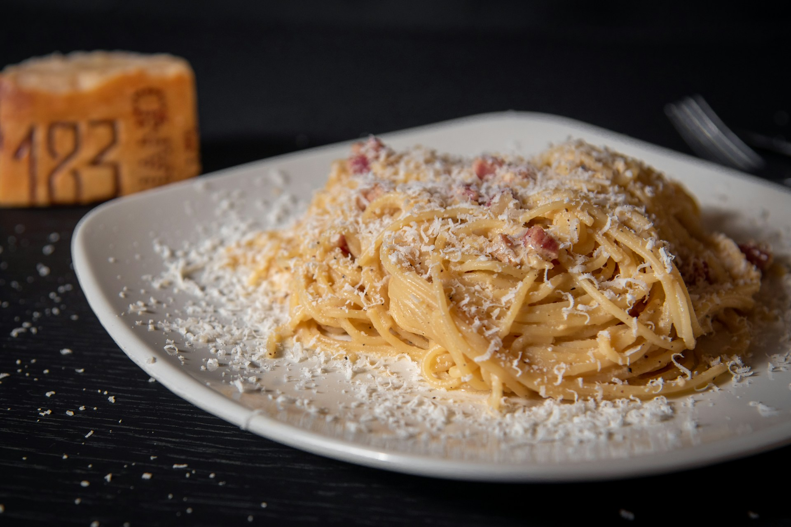

Carbonara
Spaghetti Carbonara is a classic Roman pasta dish known for its rich, creamy texture and savory flavors. The dish features al dente pasta coated in a silky sauce made from eggs, Pecorino Romano cheese, and black pepper, with crispy guanciale (or pancetta) adding a delicious, salty crunch. Despite its luxurious taste, Carbonara is made without cream; instead, the creaminess comes from the emulsion of the egg and cheese mixture with the hot pasta water. The simplicity of the ingredients requires precise cooking techniques to achieve the perfect texture and flavor balance.
Carbonara’s origins are debated, but it is widely believed to have been created in the mid-20th century in Rome. It has since become a beloved dish worldwide, celebrated for its comforting and indulgent qualities. Whether enjoyed in a cozy Roman trattoria or prepared at home, Spaghetti Carbonara delivers a satisfying meal that highlights the beauty of traditional Italian cuisine.
Ingredients
- Spaghetti (or other long pasta)
- Guanciale (or pancetta)
- Eggs (typically 2-3 large eggs)
- Pecorino Romano cheese (grated)
- Black pepper (freshly ground)
- Salt (for pasta water)
Steps
- Cook Pasta: Boil spaghetti in salted water until al dente.
- Prepare Guanciale: Dice guanciale and cook in a pan over medium heat until crispy. Remove from heat.
- Mix Eggs and Cheese: In a bowl, whisk eggs with grated Pecorino Romano and black pepper.
- Combine Pasta and Guanciale: Drain pasta, reserving some pasta water. Add pasta to the pan with guanciale, tossing to coat.
- Create Sauce: Remove the pan from heat. Quickly stir in the egg and cheese mixture, adding reserved pasta water as needed to achieve a creamy consistency.
- Serve: Plate the Carbonara immediately, garnished with extra Pecorino Romano and black pepper.